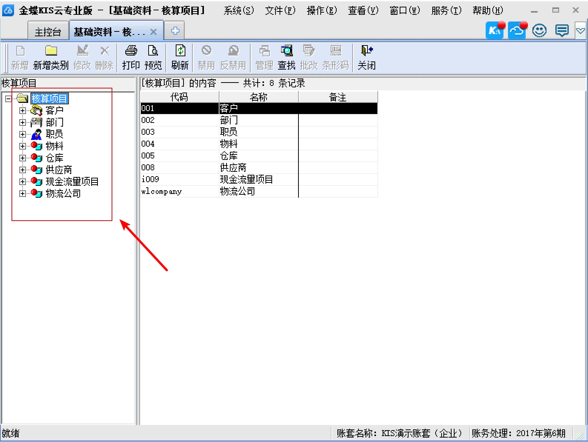
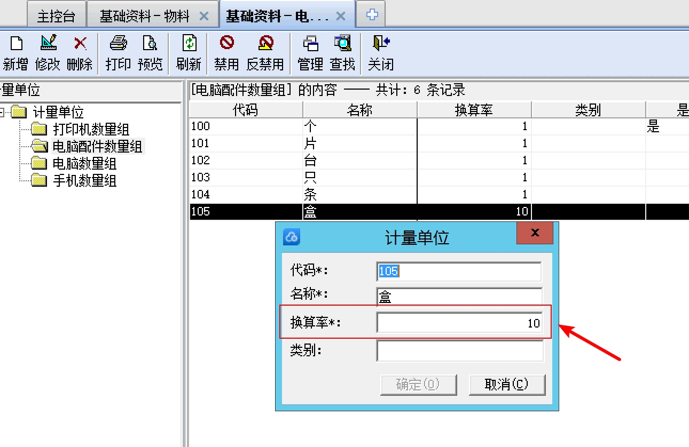
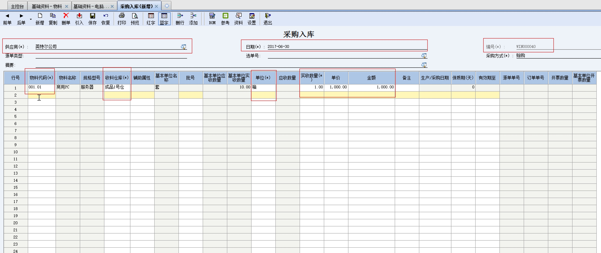
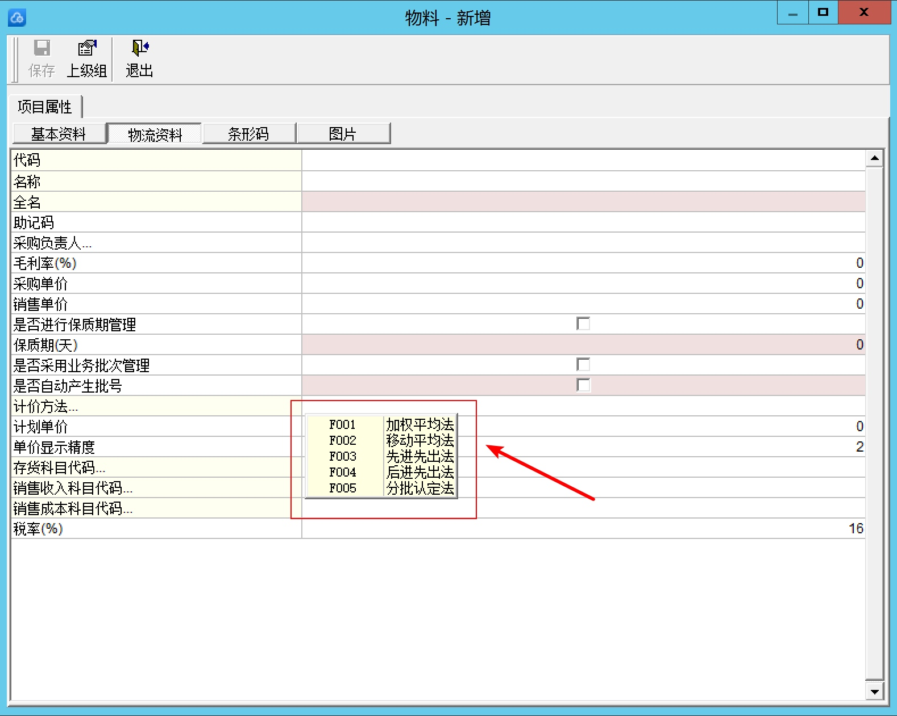

公司最近也在开发库存系统，就拿业界比较成功的金蝶来分析学习，提升自身的业务水平
库存系统最重要的就是入库与出库，成本与利润的计算
入库操作核心流程

出库操作核心流程

参与的角色
出入库操作参与的角色可以在金蝶系统里的核算项目里看到，这个角色非常重要，涉及到后面的表结构设计

可以看到有很多的角色，因为金蝶不仅仅是个库存系统，同时也是一个完整财务系统，找出库存系统不可缺少的角色有以下几个
- 供应商：库存系统把物料出库给供应商，供应商供货给系统就入库
- 物料：参与库存计算的最小单位
- 仓库：同一个物料可以同时出现在多个仓库中，但是出入库的对象一次只能选择一个仓库
在计量单位里可以管理物料的单位

特别注意这个计量单位里的换算率，比如上面的盒的换算率是10，个是默认单位，就表示1盒可以换成10个
还有一个发起出入库方的角色（一般是一个公司发起出入库），这里出入库都是作者，表结构上暂时忽略
出入库
打开仓库管理->采购入库/销售出库，拿采购入库举例

可以看到入库单核心的字段有这些
- 供应商（这些物料从哪里采购的）
- 入库日期
- 编号（不可修改，自动生成）
- 入库的物料
- 入库的仓库
- 实收的数量
- 实收的数量的单位
- 单价
- 金额
计价方式
在金蝶的新增物料界面，可以查看当前系统支持的计价方法

目前业界广泛使用有：
- 移动平均法
- 先进先出法
其它的计价方式目前使用得比较少了，有兴趣的可以去了解下会计知识
目前对先进先出法比较熟悉，就拿先进先出的计价方法举例了
表结构设计
- 出入库单据表
- 出入库单据里关联的物料表
- 批次物料库存金额结存表
- 批次物料库存出入库记录表
- 供应商表
- 物料表
- 仓库表
- 单位表
- 库存表
可以看到这个最简单的批次库存表也有9张表了
下面由作者认为的从简单到复杂的顺序来设计表，设计一个满足出入库的最小表结构
单位表
目前不考虑换算率，也就不参与库存的换算，所以单位表的字段就比较简单了
sql如下：
CREATE TABLE `unit` (
`id` bigint(20) unsigned NOT NULL AUTO_INCREMENT,
`code` varchar(32) CHARACTER SET utf8 COLLATE utf8_general_ci NOT NULL DEFAULT '' COMMENT '物品编码',
`name` varchar(128) NOT NULL DEFAULT '' COMMENT '名称',
PRIMARY KEY (`id`) USING BTREE,
UNIQUE KEY `name` (`name`) USING BTREE,
UNIQUE KEY `code` (`code`) USING BTREE COMMENT '`'
) ENGINE=InnoDB DEFAULT CHARSET=utf8 COMMENT='计量单位';
供应商表
供应商在系统里是出入库的对象，入库的物料是从供应商那里买来的，出库的物料是退货给供应商
CREATE TABLE `supply` (
`id` bigint(20) unsigned NOT NULL AUTO_INCREMENT,
`name` varchar(45) NOT NULL DEFAULT '' COMMENT '名称',
PRIMARY KEY (`id`) USING BTREE
) ENGINE=InnoDB DEFAULT CHARSET=utf8 COMMENT='供应商表';
仓库表
仓库表用来标识物料存在在那个仓库，同一个物料可能存在在多个仓库，入库时必须选择物料入到那个库
CREATE TABLE `warehouse` (
`id` bigint(20) unsigned NOT NULL AUTO_INCREMENT COMMENT '主键ID',
`organization_id` bigint(20) unsigned NOT NULL DEFAULT '0' COMMENT '门店id',
`name` varchar(32) NOT NULL DEFAULT '' COMMENT '库房名称',
PRIMARY KEY (`id`) USING BTREE
) ENGINE=InnoDB DEFAULT CHARSET=utf8 COMMENT='库房信息表';
库存表
用来记录物料在不同仓库的库存，入库和出库时需要把库存数量从批次里同步到库存表里
CREATE TABLE `inventory` (
`id` bigint(20) unsigned NOT NULL AUTO_INCREMENT COMMENT '主键ID',
`warehouse_id` bigint(20) unsigned NOT NULL COMMENT '库房ID',
`material_id` bigint(20) unsigned NOT NULL DEFAULT '0' COMMENT '物料id',
`count` decimal(16,2) NOT NULL DEFAULT '0.00' COMMENT '总库存',
`lock_count` decimal(16,2) NOT NULL DEFAULT '0.00' COMMENT '占用库存',
`available_count` decimal(16,2) NOT NULL DEFAULT '0.00' COMMENT '可用库存',
`cost_amount` decimal(16,4) NOT NULL DEFAULT '0.0000' COMMENT '成本总金额',
`updated_at` int(11) unsigned NOT NULL DEFAULT '0' COMMENT '更新时间',
`created_at` int(11) unsigned NOT NULL DEFAULT '0' COMMENT '创建时间',
`deleted_at` int(11) unsigned NOT NULL DEFAULT '0' COMMENT '删除时间',
PRIMARY KEY (`id`) USING BTREE,
KEY `idx_group_id_label_id_relation_id_type` (`warehouse_id`,`material_id`) USING BTREE
) ENGINE=InnoDB DEFAULT CHARSET=utf8 COMMENT='仓库库存表';
物料表
物料是库存操作的基本对象
CREATE TABLE `material` (
`id` bigint(20) unsigned NOT NULL AUTO_INCREMENT,
`material_code` varchar(45) CHARACTER SET utf8 COLLATE utf8_general_ci NOT NULL DEFAULT '' COMMENT '物品编码',
`name` varchar(45) NOT NULL COMMENT '名称',
`category_id` int(11) unsigned NOT NULL COMMENT '所属分类',
`category_name` varchar(45) NOT NULL COMMENT '分类名称',
`unit_weight` decimal(10,4) unsigned NOT NULL DEFAULT '0.0000' COMMENT '单位重量',
`base_unit_id` bigint(20) DEFAULT NULL COMMENT '主单位id',
`base_unit_name` varchar(64) CHARACTER SET utf8 COLLATE utf8_general_ci DEFAULT '' COMMENT '主单位名称',
`updated_at` int(11) unsigned NOT NULL DEFAULT '0' COMMENT '更新日期',
`created_at` int(11) unsigned NOT NULL DEFAULT '0' COMMENT '创建时期',
`deleted_at` int(11) unsigned NOT NULL DEFAULT '0' COMMENT '删除时间',
PRIMARY KEY (`id`) USING BTREE
) ENGINE=InnoDB DEFAULT CHARSET=utf8 COMMENT='物料';
出入库单据表
单据表用来记录有多少个出入库单，和单据的一些元信息，比如这个单据的发起的供应商，操作人，单据金额，单据里的物料的数量等
CREATE TABLE `in_out` (
`id` bigint(20) unsigned NOT NULL AUTO_INCREMENT,
`type` tinyint(2) unsigned NOT NULL DEFAULT '0' COMMENT '1:采购订单 2:采购收货单 3:采购退货单',
`in_out_code` varchar(32) CHARACTER SET utf8 COLLATE utf8_general_ci NOT NULL DEFAULT '' COMMENT '单号',
`warehouse_id` bigint(20) unsigned NOT NULL DEFAULT '0' COMMENT '仓库ID',
`warehouse_name` varchar(64) NOT NULL DEFAULT '' COMMENT '仓库名称',
`supply_id` bigint(20) unsigned NOT NULL DEFAULT '0' COMMENT '供应商id',
`supply_name` varchar(64) NOT NULL DEFAULT '' COMMENT '供应商名称',
`address` varchar(45) NOT NULL DEFAULT '' COMMENT '交货地址',
`count` int(10) unsigned NOT NULL DEFAULT '0' COMMENT '物料数量',
`amount_total` decimal(18,8) unsigned NOT NULL DEFAULT '0.00000000' COMMENT '当前单据总金额',
`amount_count` decimal(10,2) unsigned NOT NULL DEFAULT '0.00' COMMENT '当前单据总数量',
`created_at` int(11) unsigned NOT NULL DEFAULT '0' COMMENT '创建时间',
`updated_at` int(11) unsigned NOT NULL DEFAULT '0' COMMENT '更新时间',
`deleted_at` int(11) NOT NULL DEFAULT '0' COMMENT '删除时间',
PRIMARY KEY (`id`) USING BTREE,
KEY `idx_group_id_expense_sn` (`in_out_code`) USING BTREE
) ENGINE=InnoDB DEFAULT CHARSET=utf8 COMMENT='单据表';
出入库单据物料关联表
记录出入库里的物料的详细信息，比如物料的名称，编码，单位，数量，单价，金额，税额等参与库存计算的核心字段
CREATE TABLE `in_out_detail` (
`id` bigint(20) unsigned NOT NULL AUTO_INCREMENT COMMENT '主键ID',
`warehouse_id` bigint(20) unsigned NOT NULL DEFAULT '0' COMMENT '仓库ID',
`warehouse_name` varchar(62) NOT NULL DEFAULT '' COMMENT '仓库名称',
`in_out_code` varchar(32) CHARACTER SET utf8 COLLATE utf8_general_ci NOT NULL DEFAULT '' COMMENT '单号',
`in_out_id` bigint(20) unsigned NOT NULL DEFAULT '0' COMMENT '单号ID',
`in_out_type` tinyint(4) DEFAULT NULL COMMENT '单据类型',
`material_id` bigint(20) unsigned NOT NULL DEFAULT '0' COMMENT '关联ID',
`material_name` varchar(64) CHARACTER SET utf8 COLLATE utf8_general_ci NOT NULL DEFAULT '' COMMENT '关联物料名称',
`material_code` varchar(64) CHARACTER SET utf8 COLLATE utf8_general_ci NOT NULL DEFAULT '' COMMENT '关联物料sn',
`unit_basic_name` varchar(32) NOT NULL DEFAULT '' COMMENT '基本单位名称',
`unit_basic_value` decimal(10,3) NOT NULL DEFAULT '1.000' COMMENT '基本单位数值',
`unit_basic_count` decimal(10,2) unsigned NOT NULL DEFAULT '0.00' COMMENT '主单位数量',
`unit_basic_price` decimal(14,4) unsigned NOT NULL DEFAULT '0.0000' COMMENT '主单位不含税单价',
`unit_basic_tax_price` decimal(14,4) unsigned NOT NULL DEFAULT '0.0000' COMMENT '主单位的含税单价',
`unit_basic_total` decimal(18,8) unsigned NOT NULL DEFAULT '0.00000000' COMMENT '主单位不含税金额',
`unit_basic_tax_total` decimal(18,8) NOT NULL DEFAULT '0.00000000' COMMENT '主单位含税金额',
`tax` decimal(10,2) unsigned NOT NULL DEFAULT '0.00' COMMENT '税率',
`tax_total` decimal(18,8) unsigned NOT NULL DEFAULT '0.00000000' COMMENT '税额',
`production_at` int(11) unsigned NOT NULL DEFAULT '0' COMMENT '生产日期',
`created_at` int(11) unsigned NOT NULL DEFAULT '0',
`updated_at` int(11) unsigned NOT NULL DEFAULT '0',
`deleted_at` int(11) unsigned NOT NULL DEFAULT '0',
PRIMARY KEY (`id`) USING BTREE,
KEY `idx_in_out_id_material_id` (`in_out_id`,`material_id`) USING BTREE
) ENGINE=InnoDB AUTO_INCREMENT=1110 DEFAULT CHARSET=utf8 COMMENT='单据物料关联表';
物料批次表
这个批次表就是记录物料的所有的批次当前的库存状态，物料一个批次的库存理论上最多用到0库存.
CREATE TABLE `batch` (
`id` int(11) unsigned NOT NULL AUTO_INCREMENT,
`code` int(11) DEFAULT NULL COMMENT '批次代码',
`warehouse_id` bigint(20) DEFAULT NULL COMMENT '仓库id',
`in_type` int(4) DEFAULT NULL COMMENT '入库单类型',
`in_id` bigint(20) DEFAULT NULL COMMENT '入库单的id',
`material_id` bigint(20) DEFAULT NULL COMMENT '物料、菜品、套餐关联id',
`end_tax_price` decimal(14,4) DEFAULT '0.0000' COMMENT '当前含税单价',
`end_price` decimal(14,4) DEFAULT '0.0000' COMMENT '当前不含税单价',
`end_count` decimal(10,2) DEFAULT '0.00' COMMENT '当前 主单位库存数量 要减去占用数量',
`end_total_amount` decimal(18,8) DEFAULT '0.00000000' COMMENT '当前不含税总金额（发生单据后这个值会发生变化）',
`end_tax_total_amount` decimal(18,8) DEFAULT '0.00000000' COMMENT '当前含税总金额',
`end_tax_total` decimal(18,8) DEFAULT '0.00000000' COMMENT '当前结存税额',
`cost_tax_price` decimal(14,4) DEFAULT '0.0000' COMMENT '原含税单价',
`cost_price` decimal(14,4) DEFAULT '0.0000' COMMENT '原不含税单价',
`cost_count` decimal(10,2) DEFAULT '0.00' COMMENT '原主单位库存数量',
`cost_total_amount` decimal(18,8) DEFAULT '0.00000000' COMMENT '原不含税总金额',
`cost_tax_total_amount` decimal(18,8) DEFAULT '0.00000000' COMMENT '原含税总金额',
`cost_tax_total` decimal(18,8) DEFAULT '0.00000000' COMMENT '原税额',
`gross_profit` decimal(18,8) DEFAULT '0.00000000' COMMENT '利润金额(含税:入-成本/出-成本)',
`lock_count` decimal(10,2) DEFAULT '0.00' COMMENT '占用/锁定数量',
`production_at` int(11) DEFAULT NULL COMMENT '生产日期',
`status` tinyint(1) DEFAULT '1' COMMENT '冻结为0 非冻结为1',
`remark` varchar(128) CHARACTER SET utf8mb4 COLLATE utf8mb4_unicode_ci DEFAULT NULL COMMENT '备注',
`updated_at` int(11) unsigned NOT NULL DEFAULT '0' COMMENT '更新时间',
`created_at` int(11) unsigned NOT NULL DEFAULT '0' COMMENT '创建时间',
`deleted_at` int(11) unsigned NOT NULL DEFAULT '0' COMMENT '删除时间',
PRIMARY KEY (`id`) USING BTREE
) ENGINE=InnoDB DEFAULT CHARSET=utf8mb4 COLLATE=utf8mb4_unicode_ci COMMENT='批次表';
物料批次快照表
记录每次批次物料表发生变化后的快照
CREATE TABLE `batch_snapshot` (
`id` int(11) unsigned NOT NULL AUTO_INCREMENT,
`batch_id` bigint(20) DEFAULT NULL,
`in_out_detail_type` int(4) DEFAULT NULL COMMENT '单据详情类型',
`in_out_detail_id` bigint(20) DEFAULT NULL COMMENT '入库单价',
`in_count` decimal(12,4) DEFAULT '0.0000' COMMENT '入库数量',
`in_total_amount` decimal(18,8) DEFAULT NULL,
`in_tax_total` decimal(18,8) DEFAULT '0.00000000' COMMENT '税额',
`in_tax_total_amount` decimal(18,8) DEFAULT '0.00000000' COMMENT '入库含税金额',
`out_price` decimal(14,4) DEFAULT '0.0000' COMMENT '出库单价',
`out_count` decimal(10,2) DEFAULT '0.00' COMMENT '出库数量',
`out_total_amount` decimal(18,8) DEFAULT '0.00000000' COMMENT '出库未含税金额',
`out_tax_total` decimal(18,8) DEFAULT '0.00000000' COMMENT '出库税额',
`out_tax_total_amount` decimal(18,8) DEFAULT '0.00000000' COMMENT '出库含税金额',
`out_cost_tax_price` decimal(14,4) DEFAULT '0.0000' COMMENT '出库成本单价（含税）',
`out_cost_price` decimal(14,4) DEFAULT '0.0000' COMMENT '出库成本单价（不含税）',
`out_cost_total_amount` decimal(18,8) DEFAULT '0.00000000' COMMENT '出库成本含税金额',
`out_cost_tax_total_amount` decimal(18,8) DEFAULT '0.00000000' COMMENT '出库成本不含税金额',
`out_cost_tax_total` decimal(18,8) DEFAULT '0.00000000' COMMENT '出库成本税额',
`end_price` decimal(14,4) DEFAULT '0.0000' COMMENT '当前未含税单价',
`end_tax_price` decimal(14,4) DEFAULT '0.0000' COMMENT '当前含税单价',
`end_count` decimal(10,2) DEFAULT '0.00' COMMENT '当前结存数量',
`end_total_amount` decimal(18,8) DEFAULT '0.00000000' COMMENT '当前结存未含税金额',
`end_tax_total_amount` decimal(18,8) unsigned DEFAULT '0000000000.00000000' COMMENT '当前结存含税金额',
`end_tax_total` decimal(18,8) DEFAULT '0.00000000' COMMENT '当前结存税额',
`updated_at` int(11) unsigned NOT NULL DEFAULT '0' COMMENT '更新时间',
`created_at` int(11) unsigned NOT NULL DEFAULT '0' COMMENT '创建时间',
`deleted_at` int(11) unsigned NOT NULL DEFAULT '0' COMMENT '删除时间',
PRIMARY KEY (`id`) USING BTREE
) ENGINE=InnoDB DEFAULT CHARSET=utf8 COMMENT='批次快照表';
核心算法
库存系统里只要影响库存和金额的操作都可以算作库存的核心算法，其中最重要的就是物料的计价方法了，因为每次出入库都会用到这个物料的计价方法，而不同的计价方法又会直接影响到库存的成本和利润
成本计算：成本是含税的，所以计算成本时需要把税也计算在内
1. 用户输入系统的成本是不含税的，那么系统需要用税点算出税额加到成本里
2. 用户输入系统的成本是含税的，那么系统需要减掉税点得到不含税的成本
先进先出的出库算法：先入库的批次先出库
一些注意的点
金额在mysql使用decimal类型存储，在java中使用BigDecimal类型表示
批次快照表只是记录批次物料的库存快照，不参与库存和成本的计算。
持续更新...